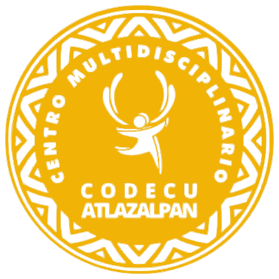
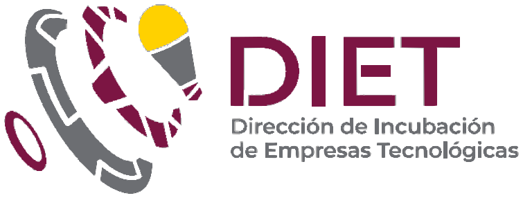
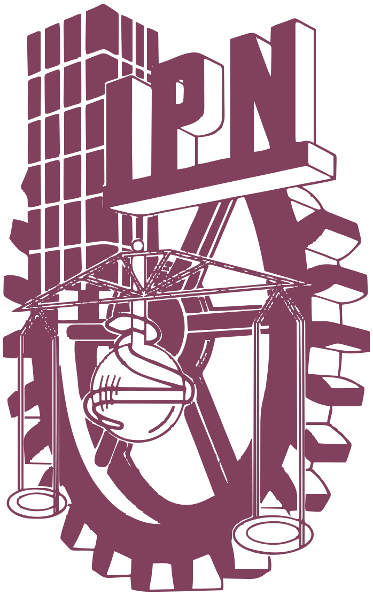
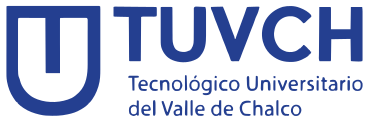
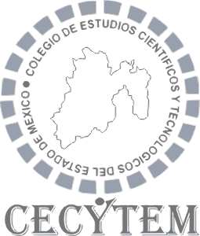
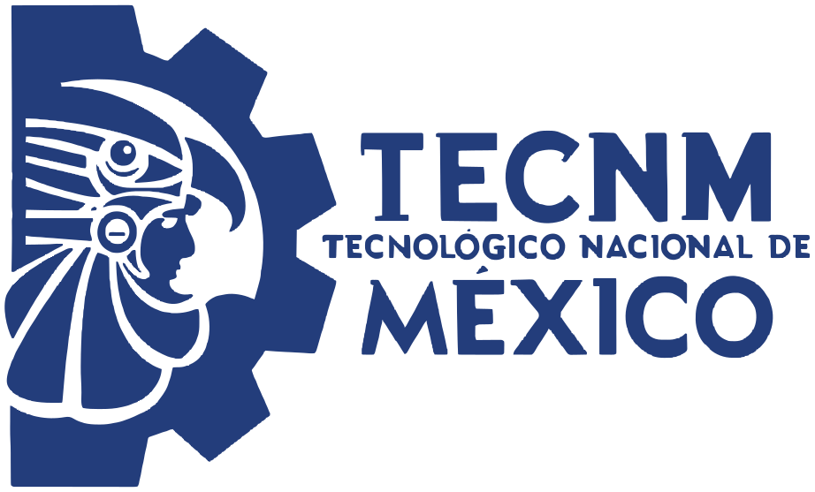
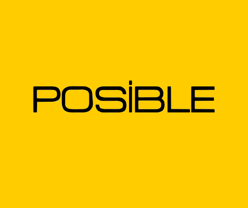

Inicio / Nosotros
Nacemos para ser un motor de transformación comunitaria y movilidad social, que usa la tecnología como herramienta para cerrar brechas.
Nuestro propósito es empoderar a nuestra región mediante la innovación técnica, convirtiendo el conocimiento científico y de vanguardia en un bien público que impulsa:
Misión y visión
01
Nuestra misión
Empoderar a la comunidad facilitando el acceso a la fabricación digital y tecnologías de vanguardia, para transformar ideas en proyectos de alto impacto educativo, social y económico.
02
Visión
Ser el nodo de referencia regional en innovación y creatividad, donde la colaboración y la tecnología se unen para impulsar el desarrollo sostenible y transformar el futuro de nuestras comunidades.
Lo que nos hace diferentes
Innovación InHouse
Máquinas y procesos en un solo lugar, listo para usar.
Certificación global
Operamos bajo los estándares de la FabLab Network.
Agilidad radical
De la idea al producto, sin mínimos de producción.
Hiper-personalización
Fabricación de piezas únicas que la industria masiva no puede atender.
Socios de la innovación
Know-how técnico y acompañamiento en diseño y metodologías.
- +2,200Proyectos
- +150Emprendedores
- +15Formaciones
- +20Colaboraciones con instituciones
Informes, artículos y publicaciones donde nos mencionan
Abrir el documento¿Qué es un FabLab?
Un FabLab (laboratorio de fabricación) es un espacio comunitario con herramientas de fabricación digital, como cortadoras láser, impresoras 3D, fresadoras CNC y electrónica, abierto para que cualquier persona aprenda y fabrique casi cualquier cosa. Nació a principios de los 2000 en el Center for Bits and Atoms del MIT y hoy es una red de más de 2,500 laboratorios en unos 125 países. Fabjardín forma parte de esa red y opera bajo sus estándares.
Fuente: MIT News, 2023
Su impacto en la sociedad
01
Acceso para todas las personas
Pone herramientas de fabricación digital al alcance de la comunidad, como una biblioteca de herramientas, sin necesidad de comprar maquinaria cara.
02
Educación que se aprende haciendo
Del curso del MIT “How To Make (almost) Anything” nació la Fab Academy: formación práctica en la que se aprende fabricando.
03
Producción local
Permite fabricar cerca de donde se necesita. Iniciativas como Fab City impulsan ciudades que producen lo que consumen.
04
Comunidad y oportunidades
Fortalece capacidades locales, apoya a quienes emprenden y conecta a las personas con conocimiento y proyectos de todo el mundo.
Nuestros aliados






